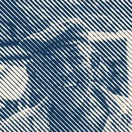

Halftoonlijnen

Tekent de laag opnieuw als gedrukte lijnen die dikker worden in donkere delen en dunner in lichte.
Instellingen
| Instelling | Type | Bereik | Standaard |
|---|---|---|---|
| Hoeveelheid | Getal | 0 tot 500 | 100 |
| Sterkte | Getal | 0 tot 1 | 0.5 |
| Hoek | Hoek | 0° tot 3600° | 45° |
| Fase | Getal | -1000 tot 1000 | 0 |
| Kleur 1 | Kleur | – | #113355 |
| Kleur 2 | Kleur | – | #FFEEDD |
| Stijl | Keuze | Klassiek, Standaard | Klassiek |